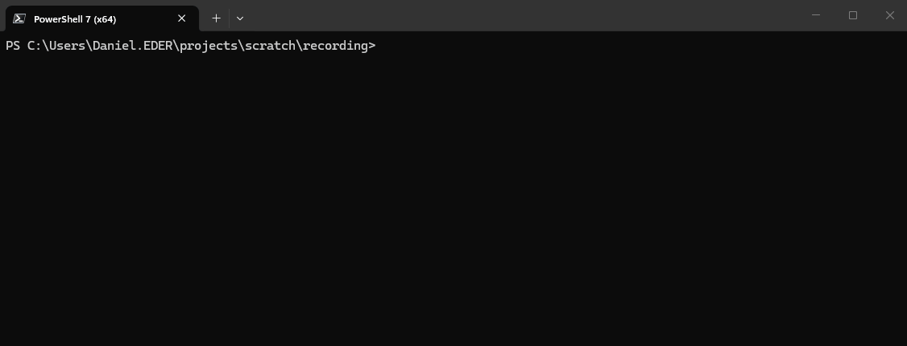

Quick capture
Save one thought or settle into an interactive capture session. Nothing gets lost between idea and action.
Local-first · plain Markdown
A tiny command-line scribe for capturing notes, tending todos, and getting back to what matters.
Alpha · Windows x64 · Download the shiori-windows-x64 artifact from the latest successful build.
No database.
No account.
No cloud.
Just plain text.
See it in motion

Save one thought or settle into an interactive capture session. Nothing gets lost between idea and action.
Notes and tasks live in ordinary Markdown. Read them anywhere, edit them with anything—even point Shiori at an Obsidian vault.
Bring notes, active tasks, due dates, topics, and tags into one colorful daily view without opening another app.
Three commands to begin
Extract shiori.exe, open a terminal in the folder where you want your notes, and you’re ready.
# meet your new scribe › .\shiori.exe init › .\shiori.exe add my first note › .\shiori.exe today_